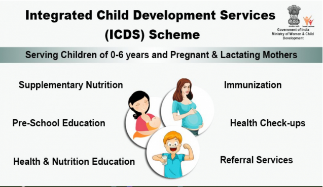
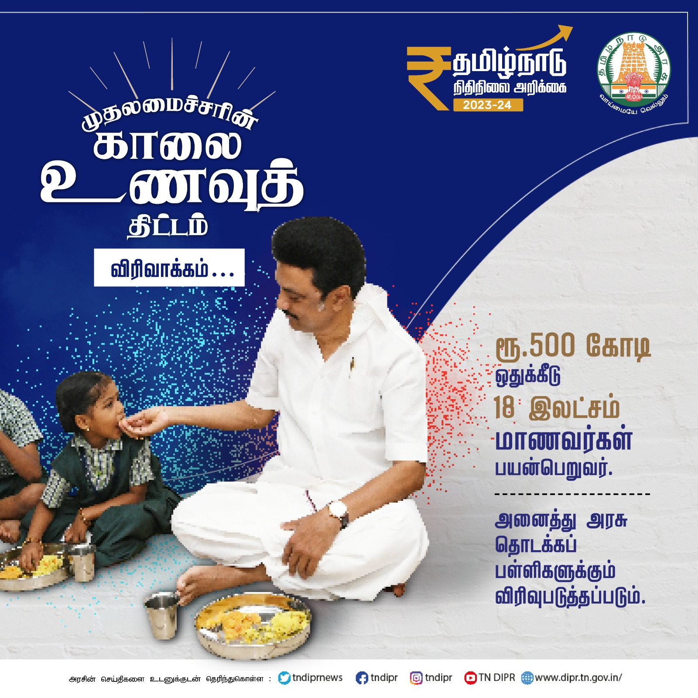

Nutritional Programs for Children and Women
1. Integrated Child Development Services (ICDS)
Objective: The ICDS is a comprehensive program aimed at the holistic development of children under 6 years of age, pregnant women, and lactating mothers. It addresses their nutritional, health, and developmental needs.
Benefits:
- Nutritional Supplementation: Provides supplementary nutrition to children (6 months - 6 years) and pregnant/lactating mothers. This is crucial for combating malnutrition and promoting healthy growth.
- Immunization: Offers immunization services to protect children against common childhood diseases.
- Health Check-ups: Regular health check-ups are conducted to monitor the health and growth of children and pregnant/lactating mothers.
- Referral Services: ICDS workers facilitate referrals to health facilities for specialized care when needed.
- Pre-school Education: Provides pre-school education to children aged 3-6 years, preparing them for formal schooling.
- Nutrition and Health Education: Educates families on nutrition, health, and childcare practices.
Other Details:
Launched by: The Government of India launched the ICDS program in 1975. It's a centrally sponsored scheme implemented by state governments.
Operations: ICDS services are delivered through a network of Anganwadi Centers (AWCs) located in communities. Anganwadi Workers (AWWs) are the frontline workers who deliver these services.
Target Group: Children under 6 years, pregnant women, and lactating mothers.
2. Chief Minister’s Breakfast Scheme
Objective: To provide nutritious breakfast to primary school students (initially classes 1-5, later expanded) in government schools. This aims to improve their nutritional status, attendance, and overall well-being.
Benefits:
- Improved Nutrition: Provides a healthy and nutritious breakfast, addressing potential nutritional deficiencies among children.
- Increased Attendance: The mid-morning meal can incentivize children to attend school regularly, improving attendance rates.
- Enhanced Learning Outcomes: Better nutrition can lead to improved concentration, cognitive function, and learning outcomes in children.
- Social Equity: The scheme helps to ensure that children from all socioeconomic backgrounds have access to at least one nutritious meal a day.
Other Details:
Launched by: The Chief Minister's Breakfast Scheme was launched by the Tamil Nadu government.
Operations: Breakfast is prepared and served in the schools themselves, often with the involvement of local communities and self-help groups. A menu is designed to ensure nutritional balance and variety.
Target Group: Initially, the scheme covered students in classes 1-5 in government primary schools. It has since been expanded to cover more classes.
Proposed Menu for Breakfast
| Sl. No. | Days in a week | Menu Type | Details of Menu |
|---|---|---|---|
| 1 | Mondays | Uppama type | Rava Uppama + Vegetable Sambhar / Vermicelli Uppama + Vegetable Sambhar / Rice Uppama + Vegetable Sambhar / Wheat Rava Uppama + Vegetable Sambhar |
| 2 | Tuesdays | Kitchadi Type | Rava Vegetable Kitchadi / Vermicelli Vegetable Kitchadi / Sorghum Vegetable Kitchadi / Wheat Rava Vegetable Kitchadi |
| 3 | Wednesdays | Pongal Type | Rava Pongal + Vegetable Sambhar / Pongal + Vegetable Sambhar |
| 4 | Thursdays | Uppama Type | Vermicelli Uppama + Vegetable Sambhar / Rice Uppama + Vegetable Sambhar / Rava Uppama + Vegetable Sambhar / Wheat Rava Uppama + Vegetable Sambhar |
| 5 | Fridays | Sweet Type | Sweet Pongal / Rava Kesari / Vermicelli Kesari |
The quantity of raw material will be 50 grams per child per day. Locally available millet-based breakfast will also be utilized for at least 2 days a week. This will ensure approximately 293.40 calories of energy, 9.85 grams of protein, 5.91 grams of fat, 1.64 grams of iron, and 20.41 grams of calcium for each child.
Key Differences and Synergies
ICDS is a broader, centrally sponsored program covering a wider age range (0-6 years) and focusing on holistic development. It provides a package of services, including nutrition, immunization, health check-ups, and pre-school education.
The Chief Minister’s Breakfast Scheme is a state-specific initiative focused specifically on providing breakfast to primary school children. It primarily addresses nutritional needs and its impact on attendance and learning.
While distinct, the two programs complement each other. ICDS focuses on early childhood development, including nutritional support, while the breakfast scheme targets primary school children to ensure they receive adequate nutrition during their crucial learning years. both schemes complement each other. ICDS focuses on early childhood development, including nutritional support, while the breakfast scheme targets primary school children to ensure they receive adequate nutrition during their crucial learning years. Both schemes play a vital role in improving the health and well-being of children in Tamil Nadu.
